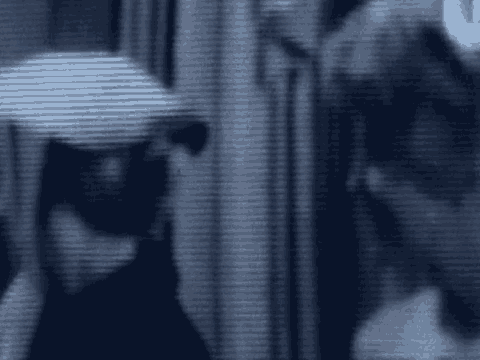

3709
1 Q And can you tell us whether or not the translations that
2 you did are fair and accurate translations of the Arabic
3 originals?
4 A Yes, they are.
5 Q And how is it that you signified that they are accurate?
6 A I went through the Arabic a few times and then translated
7 them, and I reviewed them more than once, actually.
8 Q And when you finished reviewing the translations, did you
9 do anything to the translations themselves, the documents?
10 A I changed a few things, yes. I went back to make them
11 look better.
12 Q When you were done, did you have a chance to review the
13 translations one last time?
14 A Yes, I did.
15 Q Did you do anything to the translations? Did you initial
16 and date them?
17 A Yes, I initial and dated them, yes.
18 MR. KARAS: Your Honor, we offer the exhibits I
19 listed earlier.
20 THE COURT: 1502 through 1520, 1522 through 30, 1533,
21 34, 40 and 58, all with the suffix T, received.
22 (Government Exhibits 1502-T, 1503-T, 1504-T, 1505-T,
23 1506-T, 1507-T, 1508-T, 1509-T, 1510-T, 1511-T, 1512-T,
24 1513-T, 1514-T, 1515-T, 1516-T, 1517-T, 1518-T, 1519-T,
25 1520-T, 1522-T, 1523-T, 1524-T, 1525-T, 1526-T, 1527-T,
3710
1 1528-T, 1529-T, 1530-T, 1532-T, 1533-T, 1534-T, 1540-T and
2 1558-T received in evidence.)
3 MR. KARAS: No further questions.
4 THE COURT: Anything of this witness?
5 Thank you, sir. You may step down.
6 THE WITNESS: Thank you.
7 (Witness excused)
8 MR. KARAS: Your Honor, at this time we would like to
9 display some of the exhibits, and we will start, if we could,
10 with Government Exhibit 1626A, which is one of the documents
11 downloaded from the computer disk found in 94 Dewsbury, Khalid
12 al Fawwaz's residence, and if we could display 1626A-T.
13 And if we could focus on the first three entries,
14 Khalid, the message, and ARC, on the full screen. The first
15 row, Khalid, the second reads the message, and across under
16 the column marked Cr. Date, 31/7/96, 11:31 a.m.
17 The next row across 184 reads under the column Cr.
18 Date, 31/8/96, 10:31 a.m. The next, K5, the next row reading
19 across under Cr. Date, 1/9/96, 8 p.m.
20 And if we could display 1626B, and then if we could
21 display 1626B-T, and reading just the title, "Declaration of
22 Holy War against the Americans Who are Occupying the Land of
23 the Two Holy Places. Expel the polytheist out of the Arabian
24 Peninsula. A message from Usama Bin Muhammed Bin Landen. The
25 to the Muslim brethren worldwide and specially in the Arabian
3711
1 Peninsula."
2 And if we could display 1626C, and then if we could
3 display 1626C-T. And reading the title, "Declaration of Holy
4 War Against the Americans who Are Occupying the Land of the
5 Two Holy Places."
6 Below, the next line, "A message from Usama Bin
7 Muhammed Bin Laden to his Muslim brethren worldwide and
8 specially in the Arabian Peninsula."
9 For the record, 1626B and C are two of the documents
10 found on the disk located in 94 Dewsbury.
11 Next if we could display 1600A, the first page, and
12 if we could display 1600A-T, the first page.
13 (Government Exhibit 1600A-T read)
14 MR. KARAS: And if we could display Government's
15 Exhibit 1628A, one of the documents found in 94 Dewsbury, and
16 if we could display 1628A-T, I believe it is. Reading again
17 the title, "Declaration of Holy War Against the Americans Who
18 are Occupying the Land of the Two Holy Places." A couple
1